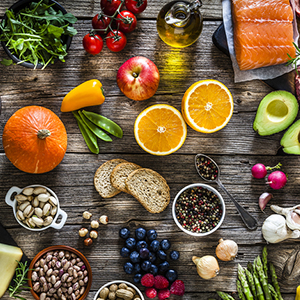
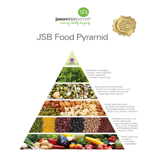
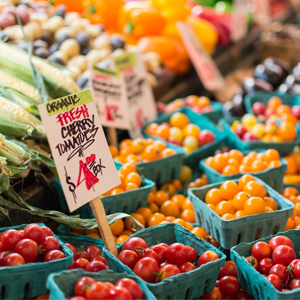

|  |
What is a healthy diet?Have you asked yourself this question many times? Most, however, do not think about this until necessity (read: illness) forces them to do so. There is an old saying that "a healthy person does not trust a sick person", and that is why people in most cases do not think about "health entering the mouth". I do not intend to write here about scientific discussions and evidence for or against a particular type of food or diet. This is my attempt to first of all teach myself, and perhaps those who will read this text, some basic generally accepted principles of healthy eating. I will write about my views and opinions on this topic, and probably those thoughts will change as time goes on and as progress progresses in this form of my "improvement". |
What is a balanced diet?The best answer to this question was given by Hippocrates a long time ago: "Everything we take into our body with food builds us and changes us, our strength, health and life depend on it." Let food be your medicine, not medicine your food. "This means that in ancient times people knew that food ingredients were what could make us healthy or sick. So that I wouldn't go into such a distant past, explaining how Hippocrates came to this conclusion (not a point in the past but in our future), I will just say that modern medicine has also established and confirmed that one of the causes of human diseases is precisely the food he eats or the food he does not eat. individually does not contain all the elements that would allow the human body to function properly, which means that a varied diet is one of the basic prerequisites for a healthy diet.The problem arises when it is necessary to determine how much of these necessary elements. amount of food, we do not all have the same metabolism, we do not all live the same way of life ... Excessive intake of certain foods, or vice versa, not eating the necessary foods, we poison all oj organism, we destroy the body (and thus we destroy our spirit), we shorten its duration, that is, its life. |
 |
|  |
The future is in the organicToday, there is almost no need to emphasize the value of organic food. What is the value of the healthiest foods, if they are polluted many times over? For those who eat healthier and whose daily diet is cereals and legumes, it is very important that they can find them in organic form. That is why the wholesale company Beyonda decided to orient itself in this direction and was the first to start systematically supplying the Serbian market with certified organic foods. Thus, thanks to Beyond, fans of a healthier diet were finally able to buy almost all cereals and legumes used in the daily diet at affordable prices, even the more "exotic" ones - quinoa (a special old type of cereal), azuki, mung etc., but also very healthy organic oils of coconut and palm. In addition, we were the first in our market to start distributing the Neera diet kit, an old Hawaiian formula used to cleanse and detoxify the body and for very fast, safe and effective weight regulation. . |